Только 9 видовых вилл на холме
Canopy Hills - клубный поселок из 9 вилл на холме в Ko Kaeo. Для клиента это означает приватность, меньше соседей, спокойную среду и ощущение редкой резиденции, а не массового девелоперского продукта.
Ограниченное предложение помогает агенту объяснять ценность: клиент покупает не просто дом, а редкий формат постоянного проживания на Пхукете с видами, тишиной и масштабом.
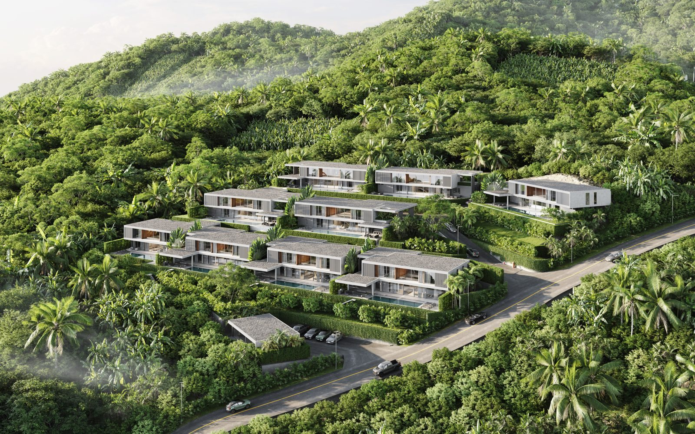
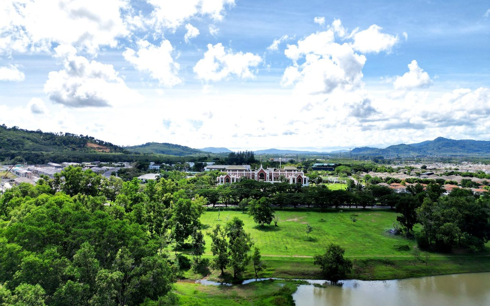
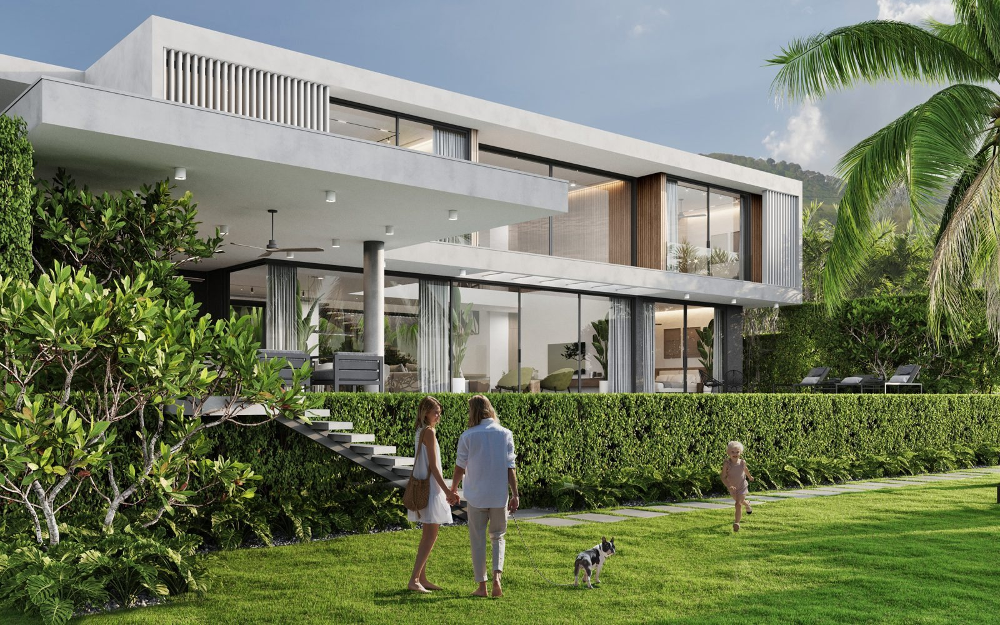
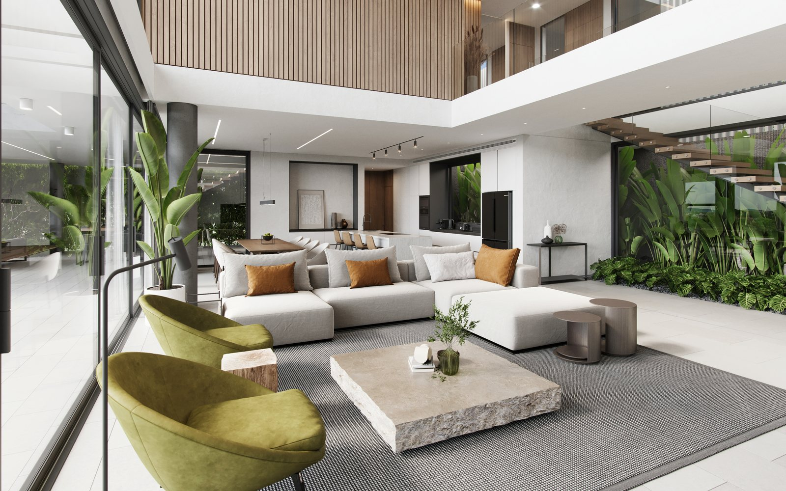
Открытые виды: долина, озера, холмы и закат
В Canopy Hills вид - не бонус, а основа продукта. Из вилл раскрываются долина, озера, холмы и закатная сторона. Это влияет не только на эмоцию от дома, но и на ликвидность: видовые объекты проще объяснять, легче запомнить и сильнее отличать от однотипных вилл.
Для клиента это ежедневное ощущение пространства и свободы. Для агента - простой аргумент, почему проект нельзя сравнивать только по цене за квадратный метр.
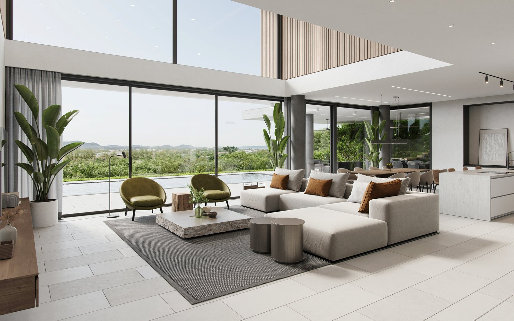
Участки: 670-1,214 м²
Участки Canopy Hills - от 670 до 1,214 м². Для семейной резиденции это критично: дом не зажат на маленьком участке, а работает вместе с садом, бассейном, террасами и внешними зонами.
Здесь участок усиливает качество жизни: больше приватности, больше воздуха, больше реальных outdoor-сценариев.
L-size 650 м² / XL-size 750 м²
В Canopy Hills есть два основных формата: L-size 650 м² и XL-size 750 м². Это упрощает работу агента: можно быстро объяснить клиенту разницу не через десятки PDF, а через понятный выбор масштаба.
L-size - просторная семейная резиденция. XL-size - более крупный формат для клиента, которому важны статус, дополнительные комнаты и больший объем дома.
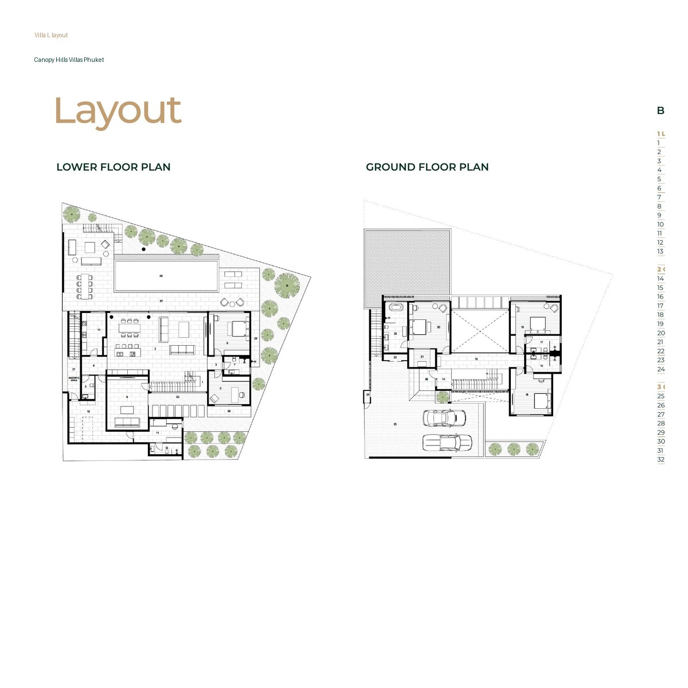
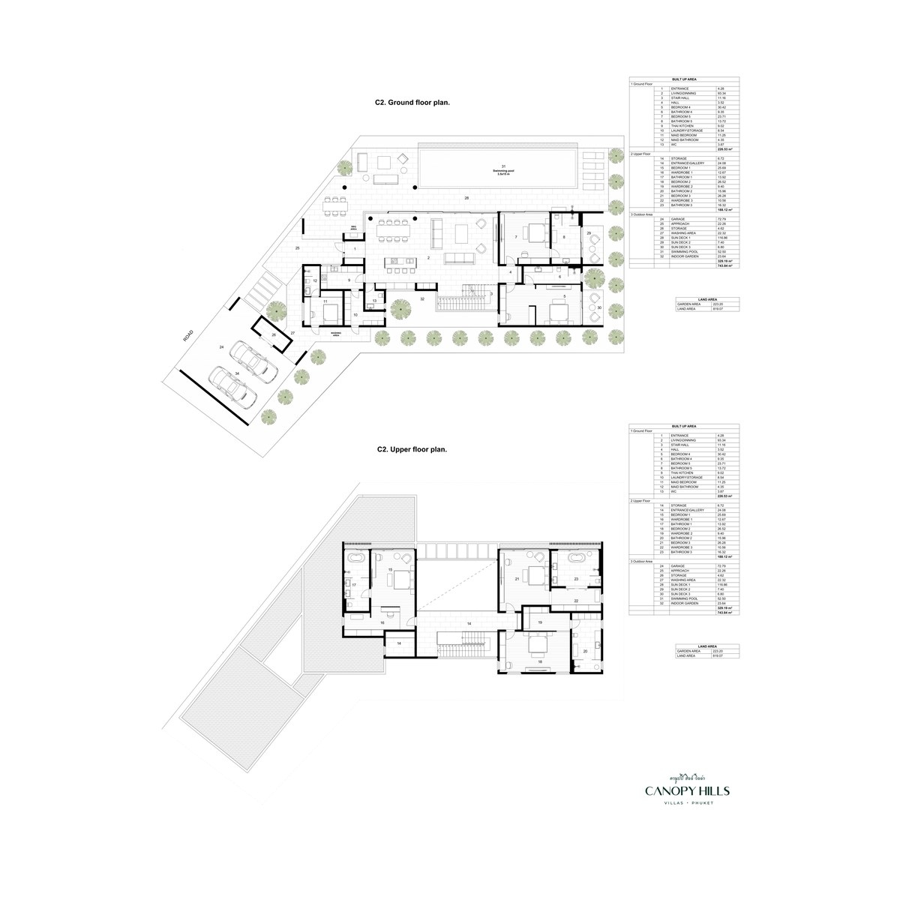
Гостиная с потолком 7 м
Гостиная с потолком 7 метров создает главный эмоциональный эффект дома. В таком пространстве больше света, воздуха и ощущения свободы.
Для семьи это центр жизни: место, где собираются вместе, принимают гостей, смотрят на вид и ощущают масштаб резиденции каждый день.
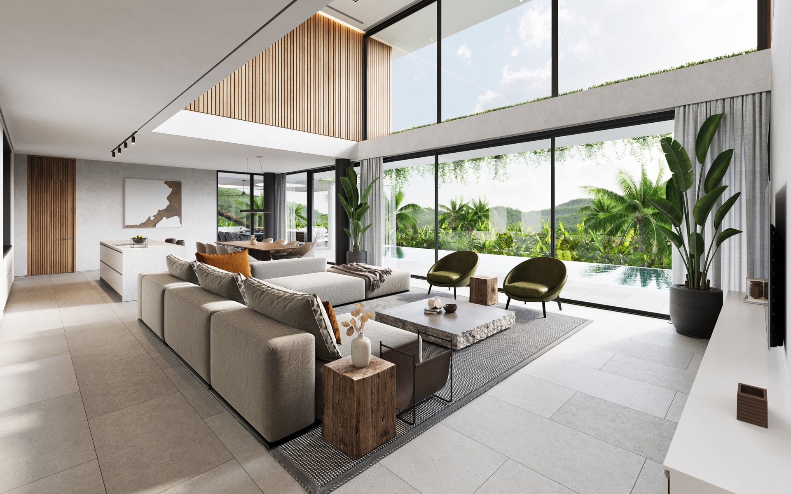
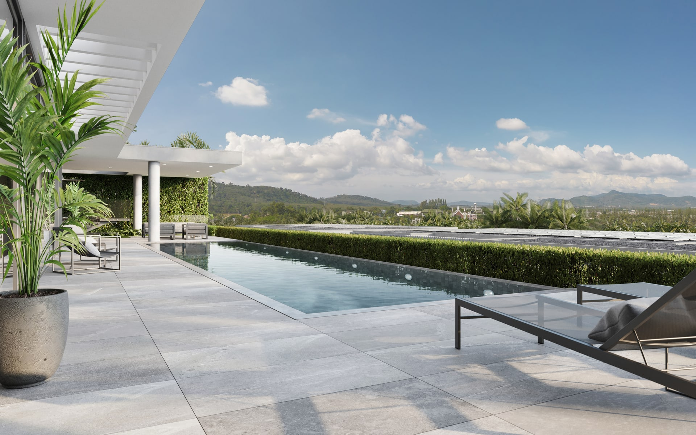
Устойчивый спрос на долгосрочную аренду
Canopy Hills не строится вокруг посуточной туристической аренды. Инвестиционная логика проекта основана на долгосрочном residential спросе: семьи с детьми в международных школах, expat families, клиенты, которым нужен качественный дом для жизни на Пхукете.
Такой спрос меньше зависит от сезона и туристического потока. Для инвестора это более понятная модель: качественная резиденция, редкий видовой продукт и практичная локация рядом со школами и ежедневной инфраструктурой.
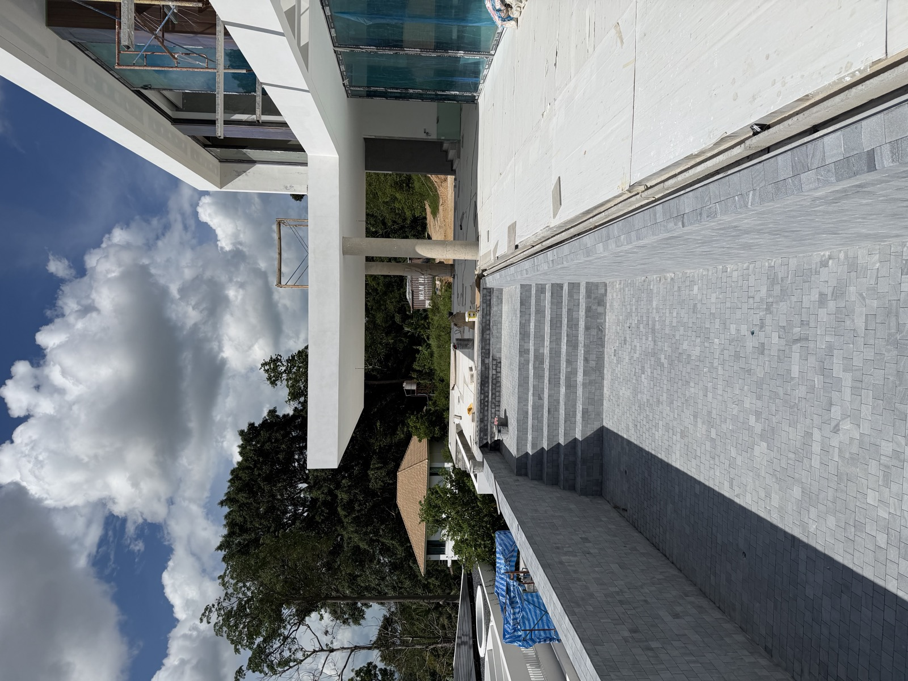
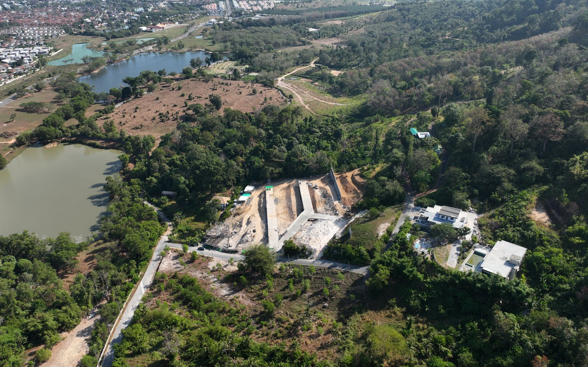
Тихая локация Ko Kaeo, не туристическая зона
Canopy Hills находится в Ko Kaeo - спокойной зеленой зоне для постоянного проживания. Для семей и expat-клиентов это часто важнее, чем жизнь в туристическом трафике.
Это локация для клиента, который живет на Пхукете, возит детей в школу, работает, занимается спортом, пользуется маринами и хочет возвращаться домой в тихое место.
Тепло- и шумоизоляция на 50% выше стандарта
Canopy Hills проектировался как резиденция для постоянного проживания. Поэтому важны не только виды и рендеры, но и то, как дом ощущается каждый день.
Тепло- и шумоизоляция выше стандарта помогает дому быть спокойнее и комфортнее в климате Пхукета. Для семьи это не техническая деталь, а качество жизни.
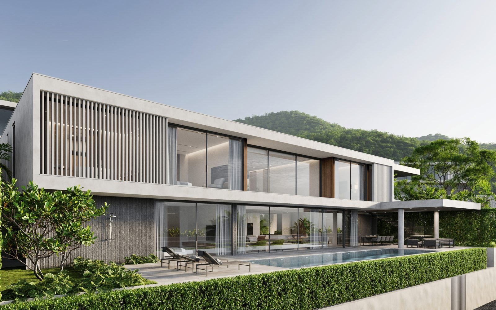
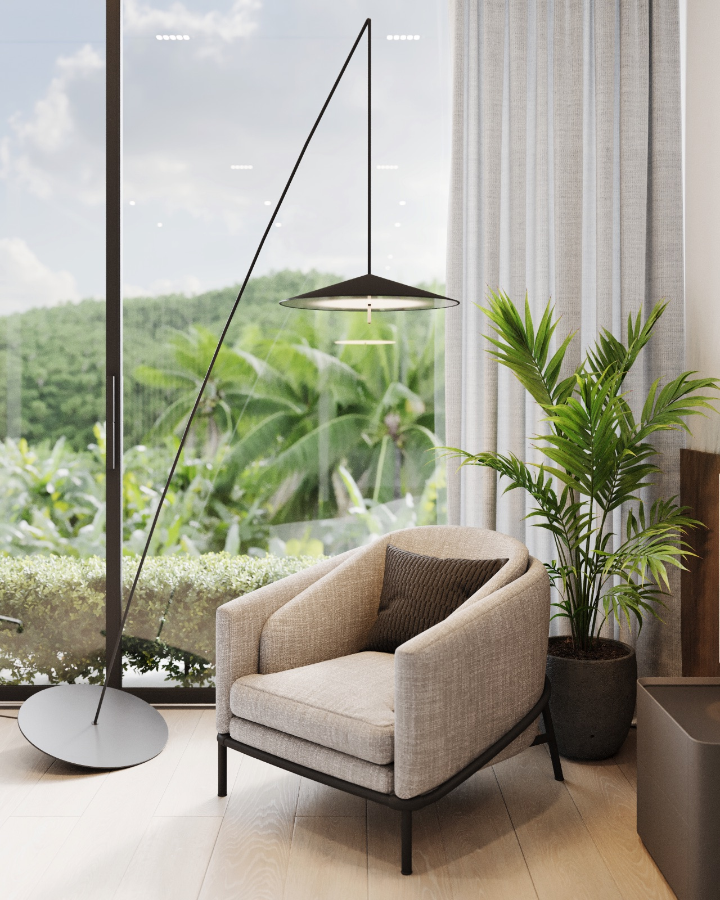
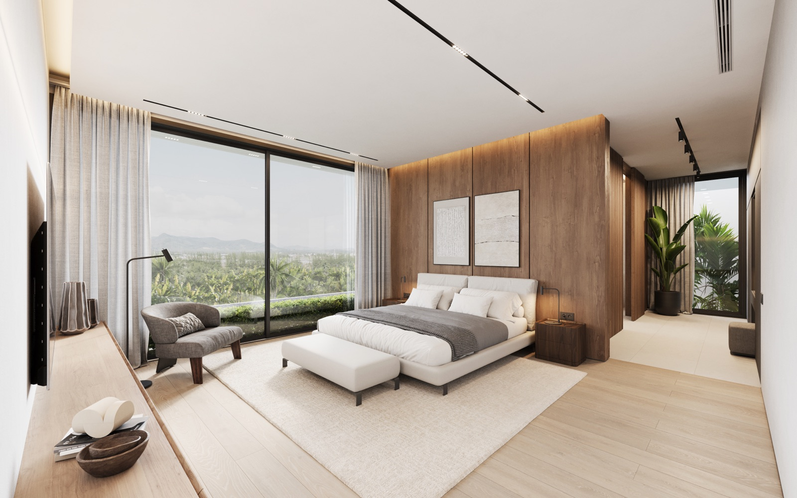